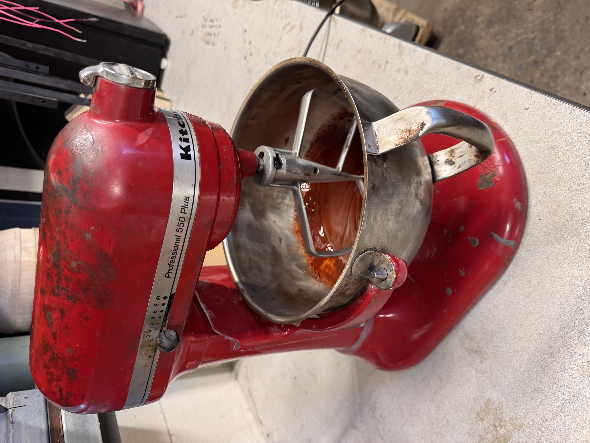
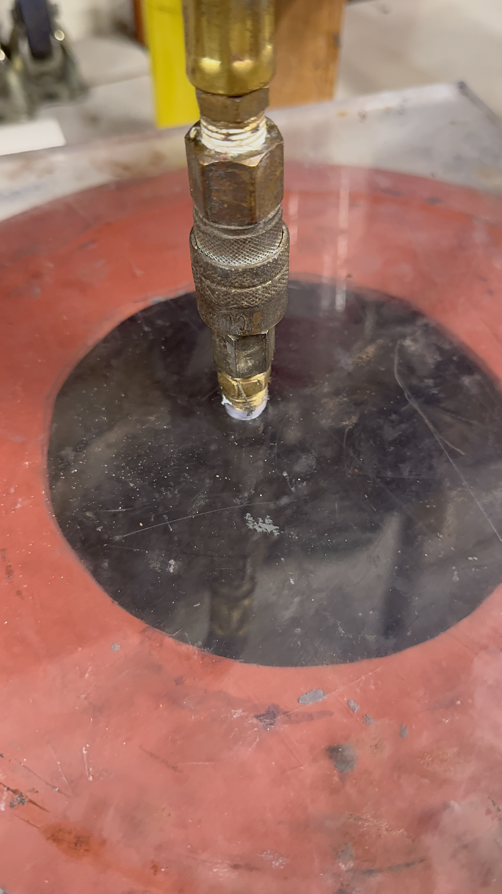
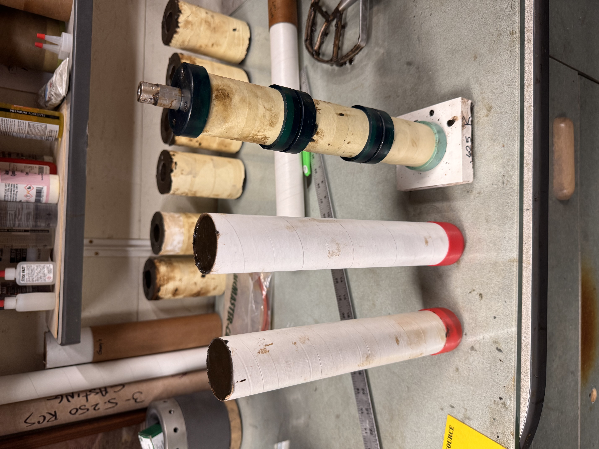
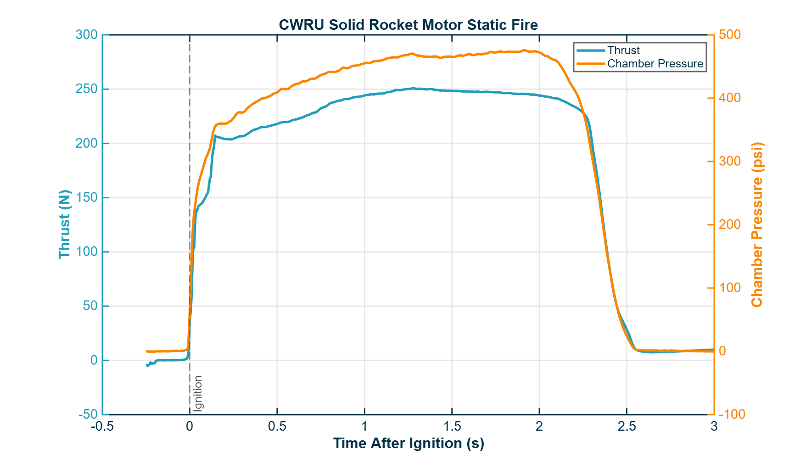

01 — OVERVIEW
Building an in-house propulsion capability
The long-term goal of Case Rocket Team's Solid Propulsion R&D program is to develop the knowledge, procedures, hardware, and testing infrastructure required to design and operate Student Researched and Developed (SRAD) solid rocket motors.
I began working on development of the team's first SRAD motor and now lead the effort as Solid Propulsion R&D Chief Engineer. My work spans the complete engineering cycle: motor performance simulation, grain design, case and closure design, structural analysis, manufacturing, propellant processing, instrumentation, testing, and post-test analysis.
Beyond producing a single successful motor, a major goal is to establish a repeatable engineering process that future team members can safely build upon.
02 — MY ROLE
From preliminary design to static fire
I coordinate motor development across performance, structures, manufacturing, propellant processing, instrumentation, testing, and documentation.
The project requires decisions across multiple disciplines: internal ballistics affect the grain and nozzle geometry; chamber pressure drives structural and sealing requirements; manufacturing constraints influence component design; and every subsystem must ultimately integrate into a safe, testable motor.
03 — MOTOR ARCHITECTURE
Designing the motor as a coupled system
Motor geometry is developed iteratively rather than treating the grain, case, closures, nozzle, and seals as independent components.
Performance simulations establish expected chamber-pressure and thrust behavior. Those predictions inform structural loading, closure retention, sealing requirements, nozzle geometry, and the mechanical packaging of the complete motor.
I use CAD to evaluate component interfaces, tolerances, assembly sequence, retention features, and manufacturability before committing hardware to fabrication.
04 — PERFORMANCE SIMULATION
Predicting the burn before building hardware
Internal-ballistics simulations are used to investigate how grain geometry, burning surface area, nozzle geometry, propellant behavior, and chamber pressure interact over the duration of the burn.
Rather than optimizing only for peak thrust, I look at the overall pressure and thrust history, burn duration, stability of the predicted operating point, and the sensitivity of the design to manufacturing variation.
I have also investigated effects such as erosive burning, where high gas velocity through the grain port can alter the expected burning behavior and therefore affect the pressure history.
05 — STRUCTURAL DESIGN
Designing hardware around chamber pressure
Predicted chamber pressure provides the primary structural load for the motor hardware. I use analytical calculations and finite-element analysis to evaluate stresses in the motor case and to check that the design maintains adequate margin under expected operating conditions.
Closure retention is treated as its own mechanical-design problem. I perform snap-ring and retention calculations to evaluate the forces transmitted through the closures and the surrounding case geometry.
The design process also includes sizing and locating O-ring interfaces so that the motor can maintain a reliable pressure seal while remaining practical to manufacture and assemble.
Pressure Loads
Convert predicted chamber pressure into structural load cases for the case and closures.
Case FEA
Evaluate stress distribution and identify areas requiring geometric refinement.
Closure Retention
Check snap-ring and retaining-feature loads under internal pressure.
Sealing
Size O-ring interfaces and integrate sealing requirements into the mechanical design.
06 — MANUFACTURING
Turning the design into flight-like hardware
The project combines conventional machining with specialized materials and fabrication methods.
Case and closure features are designed around available manufacturing capabilities. Forward-closure components have been prepared using waterjet cutting and subsequent machining, while graphite is used for high-temperature nozzle hardware.
Component designs are reviewed with experienced mentors and machinists before fabrication. Their input is especially valuable for evaluating tolerances, tooling access, material behavior, and practical assembly considerations that are not always obvious from CAD alone.
07 — PROPELLANT DEVELOPMENT
Establishing a repeatable manufacturing process
The motor program uses an ammonium-perchlorate-based composite propellant system. My work includes designing grain geometry around desired motor performance and developing team procedures for producing consistent grains.
A major focus has been process control: documenting preparation steps, improving mixing consistency, monitoring material quality, and building procedures that can be repeated by trained team members rather than relying on undocumented individual technique.
The same procedures emphasize safe chemical handling, controlled work areas, appropriate PPE, and clear responsibilities during manufacturing operations.



08 — STATIC FIRE TESTING
Closing the loop with measured performance
Static-fire testing provides the most important validation of the motor-development process. The test measures actual thrust and chamber pressure through the burn, allowing the physical motor to be compared with pre-test simulation.
The measured thrust curve shows rapid ignition followed by a relatively stable operating region before tail-off. Chamber pressure follows the same overall burn behavior, providing an additional indication of the motor's internal performance.
Static-fire test of the team's experimental solid rocket motor.
Total Impulse
Average Thrust
Peak Thrust
Burn Time
Measured Motor Designation

09 — TEST ANALYSIS
Turning a static fire into design feedback
The purpose of the test is not simply to demonstrate that the motor operates. Measured chamber pressure and thrust provide feedback for the next design iteration.
I compare the measured burn profile with predicted behavior, examine ignition and tail-off, evaluate the stability of the operating region, and use differences between simulation and test to identify areas where the model or manufacturing process can be improved.
The current test produced approximately 548.5 N·s of total impulse. Using the measured average thrust, the motor is reasonably described as an approximately I220-class test motor.
10 — SAFETY + ENGINEERING PROCESS
The motor is only one part of the project.
Developing experimental propulsion hardware requires an engineering process that treats safety, documentation, and technical review as part of the design rather than as afterthoughts.
I work with team mentors and experienced propulsion practitioners when reviewing motor hardware, manufacturing plans, test procedures, instrumentation, and operational decisions.
The program is developed with applicable amateur-rocketry requirements and established NAR, Tripoli, university, and FAA safety constraints in mind. Procedures are documented so that chemical handling, assembly, testing, and data analysis can be performed consistently by trained team members.
11 — DEVELOPMENT PROCESS
Design. Analyze. Build. Test. Learn.
One of the most valuable parts of the project is the feedback loop between analytical work and physical testing.
Simulate
Establish expected pressure, thrust, and burn behavior.
Design
Develop the case, closures, seals, nozzle, and grain geometry.
Analyze
Verify structural loads, retention, and system interfaces.
Manufacture
Fabricate hardware and produce motor grains.
Test
Measure actual thrust and pressure.
Iterate
Compare prediction with test and improve the next design.
12 — CURRENT DEVELOPMENT
Scaling toward the team's next motor
Current work is focused on expanding the team's experimental propulsion capability toward a larger 98 mm-class motor and improving the infrastructure required to design and test it repeatably.
98 mm Motor
Developing a larger motor architecture and evaluating grain, nozzle, case, sealing, and closure requirements.
Test Stand
Developing an instrumented static-test capability for repeatable thrust and chamber-pressure measurement.
Process Control
Building standardized manufacturing, assembly, inspection, and testing procedures.
Model Validation
Comparing predicted motor behavior with static-fire data to improve future design confidence.